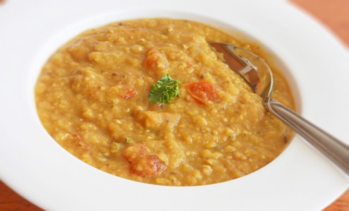

Indian Dal

Ingredients:
- 1 cup dry Chana Dal (split chickpeas) red/light yellow/dark yellow/black/green, onion, 1 tbsp ginger/galic paste, 1 tsp cumin seeds, 2 tsp turmeric powder, 1 tomato, 1.5 tsp coriander powder, 0.5 tsp smoked paprika, olive oil
- Water 3:1 ratio with cups of lentils
How to make it:
- Saute in instant pot for 2 minutes (no lid) - olive oil and cumin seeds
- Add onion, garlic, ginger and saute for 3 minutes
- Add everything else, close the lid, and set instant pot for 20 min (10-15 if you use red lentils)